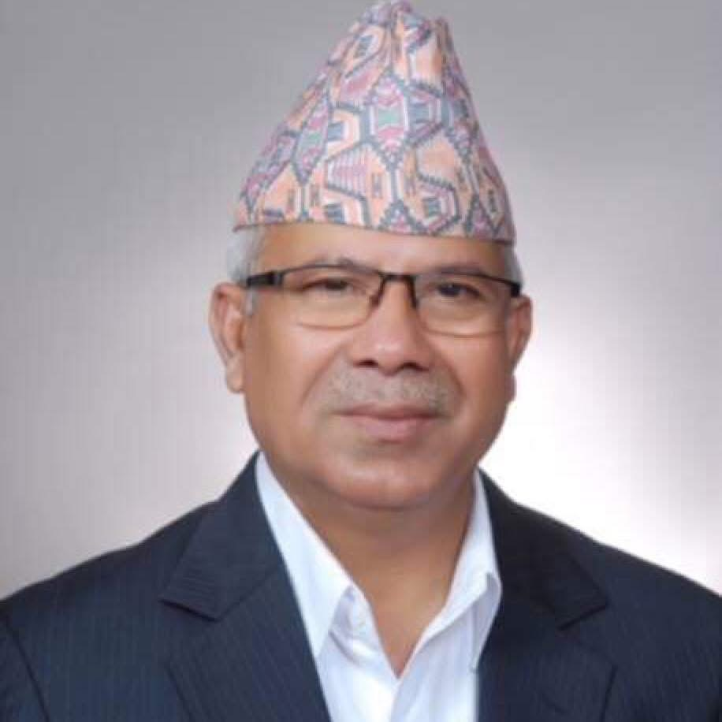

Madhav Kumar Nepal
Born: 6 March 1953
Married to Gayatri Acharya
B.Com, TU 1973
gamknepal@gmail.com

Name: Madhav Kumar Nepal | DOB: 6 March 1953 | Gender: Male
Spouse: Gayatri Acharya | Children: Dr. Suman Nepal & Er. Saurav Nepal
Education: B.Com, Tribhuvan University, 1973
Languages: Nepali, Hindi, Maithili, Bhojpuri, English
Address: Fullwari Marga 503/40022, Koteshwor, Kathmandu-32, Nepal
Email: gamknepal@gmail.com | Web: www.madhavnepal.com
Co-Convenor, Nepali Communist Party (NCP) 窶・since 5 Nov 2025
Chairman, CPN (Unified Socialist) 窶・since Aug 2021
Former PM of Nepal 窶・2009-2011
窶｢ Chairman, Puspalal Memorial Foundation
窶｢ Member, Red Cross Society
窶｢ Patron, Tulsilal Memorial Academy
窶｢ Patron, Rautahat Development Trust
窶｢ Member, Standing Committee of ICAPP
窶｢ Co-Chairman, Int. Eco-Safety & Cooperative Org.
窶｢ Patron, Himalaya Conservation Group
窶｢ Member of Eminent Persons, CAPDI
窶｢ Honorary President, SICO